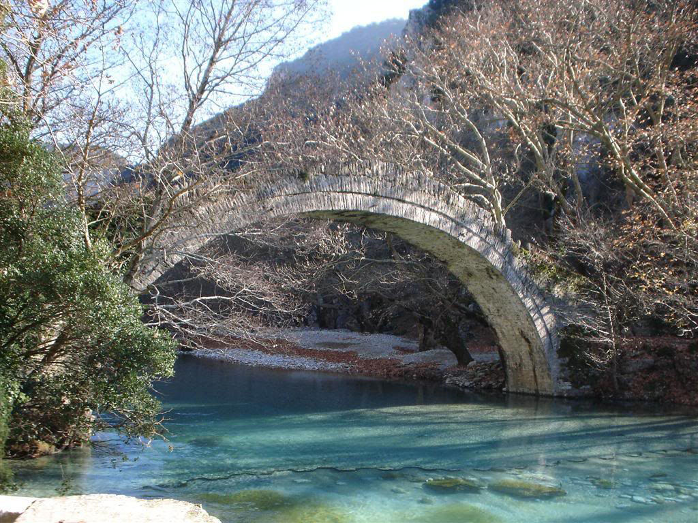

Τα Ζαγοροχώρια είναι ένα χωριό στο Νομό Ιωαννίνων. Έχει μια θέα που δύσκολα κάποιος μπορεί να βρει. Τα ποτάμια είναι απότομα με πολλά ρυάκια και παγωμένο νερό, ο λόγος που το ράφτινγκ είναι διασκεδαστικό. Είναι ένα γραφικό χωρίο, το οποίο ουσιαστικά αποτελείται από το Δυτικό, το Νότιο, το Ανατολικό και το Βόρειο Ζαγοροχωριό. Τα φαγητά είναι παραδοσιακά και τα κρέατα πολύ γευστικά.
